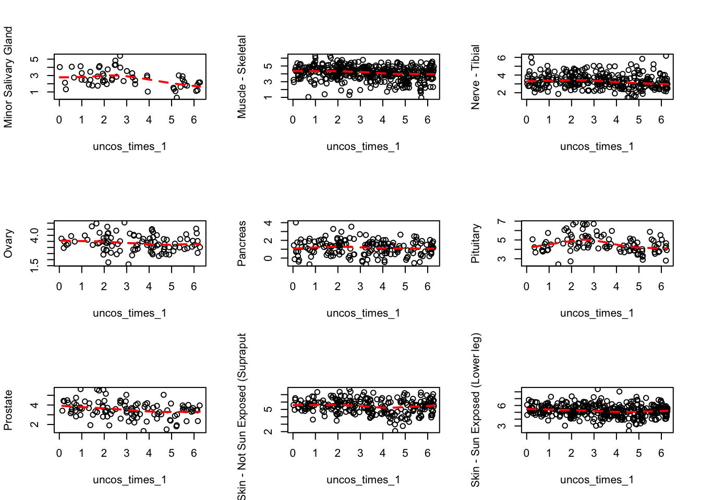
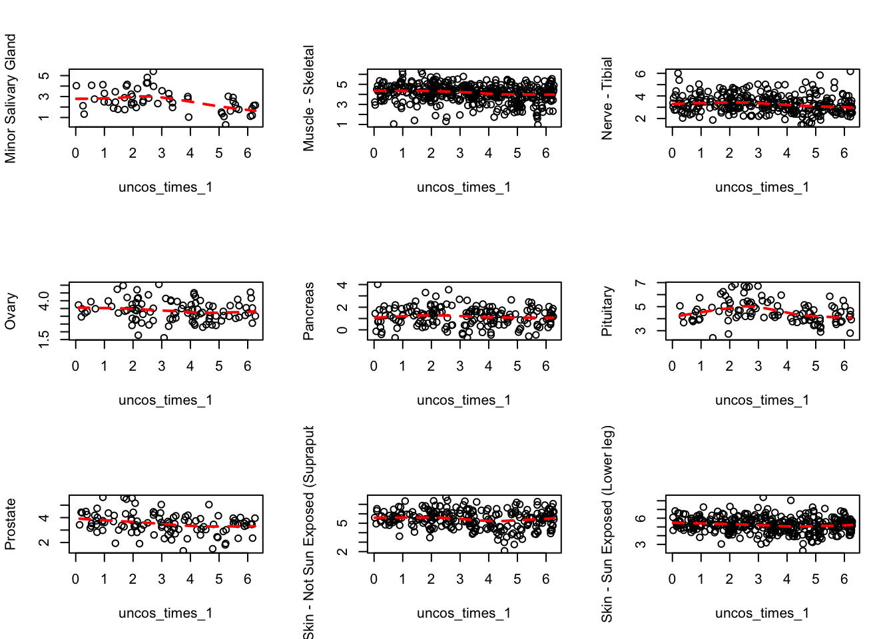

We see there are some genes specifically correlated to circadian effect in the Breast mammary tissue. Also, there are some genes that show enrichment with respect to the brain tissues, although one cannot call them brain specific. Apart from the breast mammary tissue and brain tissues, the other tissues of interest are thyroid and skin.
## Finished
## Pass returnall=TRUE to return lists of duplicate or missing query terms.
cbind.data.frame(out$name, out$summary)
## out$name
## 1 notch 3
## 2 ankyrin repeat domain 27
## 3 mitogen-activated protein kinase 14
## 4 ATPase H+ transporting V1 subunit F
## 5 cAMP regulated phosphoprotein 19
## 6 sphingomyelin phosphodiesterase 2
## 7 3-phosphoinositide dependent protein kinase 1
## 8 SDE2 telomere maintenance homolog
## 9 RNA polymerase II subunit D
## 10 ring finger protein 207
## 11 ribosomal protein L39 like
## 12 katanin catalytic subunit A1 like 2
## 13 solute carrier family 25 member 41
## 14 protein phosphatase 1 regulatory subunit 27
## 15 BTB domain containing 9
## 16 NUT family member 2A
## 17 <NA>
## 18 zinc finger CCCH-type domain-containing-like
## 19 leucine rich repeat containing 37 member A15, pseudogene
## 20 <NA>
## 21 SAPCD1 antisense RNA 1
## 22 MYCBP2 antisense RNA 1
## 23 <NA>
## 24 <NA>
## 25 <NA>
## out$summary
## 1 This gene encodes the third discovered human homologue of the Drosophilia melanogaster type I membrane protein notch. In Drosophilia, notch interaction with its cell-bound ligands (delta, serrate) establishes an intercellular signalling pathway that plays a key role in neural development. Homologues of the notch-ligands have also been identified in human, but precise interactions between these ligands and the human notch homologues remains to be determined. Mutations in NOTCH3 have been identified as the underlying cause of cerebral autosomal dominant arteriopathy with subcortical infarcts and leukoencephalopathy (CADASIL).
## 2 <NA>
## 3 The protein encoded by this gene is a member of the MAP kinase family. MAP kinases act as an integration point for multiple biochemical signals, and are involved in a wide variety of cellular processes such as proliferation, differentiation, transcription regulation and development. This kinase is activated by various environmental stresses and proinflammatory cytokines. The activation requires its phosphorylation by MAP kinase kinases (MKKs), or its autophosphorylation triggered by the interaction of MAP3K7IP1/TAB1 protein with this kinase. The substrates of this kinase include transcription regulator ATF2, MEF2C, and MAX, cell cycle regulator CDC25B, and tumor suppressor p53, which suggest the roles of this kinase in stress related transcription and cell cycle regulation, as well as in genotoxic stress response. Four alternatively spliced transcript variants of this gene encoding distinct isoforms have been reported.
## 4 This gene encodes a component of vacuolar ATPase (V-ATPase), a multisubunit enzyme that mediates acidification of eukaryotic intracellular organelles. V-ATPase dependent organelle acidification is necessary for such intracellular processes as protein sorting, zymogen activation, receptor-mediated endocytosis, and synaptic vesicle proton gradient generation. V-ATPase is composed of a cytosolic V1 domain and a transmembrane V0 domain. The V1 domain consists of three A and three B subunits, two G subunits plus the C, D, E, F, and H subunits. The V1 domain contains the ATP catalytic site. The V0 domain consists of five different subunits: a, c, c', c', and d. Additional isoforms of many of the V1 and V0 subunit proteins are encoded by multiple genes or alternatively spliced transcript variants. This encoded protein is the V1 domain F subunit protein.
## 5 The 19-kD cAMP-regulated phosphoprotein plays a role in regulating mitosis by inhibiting protein phosphatase-2A (PP2A; see MIM 176915) (summary by Gharbi-Ayachi et al., 2010 [PubMed 21164014]).
## 6 This gene encodes a protein which was initially identified as a sphingomyelinase based on sequence similarity between bacterial sphingomyelinases and a yeast protein. Subsequent studies showed that its biological function is less likely to be as a sphingomyelinase and instead as a lysophospholipase.
## 7 <NA>
## 8 <NA>
## 9 This gene encodes the fourth largest subunit of RNA polymerase II, the polymerase responsible for synthesizing messenger RNA in eukaryotes. In yeast, this polymerase subunit is associated with the polymerase under suboptimal growth conditions and may have a stress protective role. A sequence for a ribosomal pseudogene is contained within the 3' untranslated region of the transcript from this gene.
## 10 <NA>
## 11 This gene encodes a protein sharing high sequence similarity with ribosomal protein L39. Although the name of this gene has been referred to as 'ribosomal protein L39' in the public databases, its official name is 'ribosomal protein L39-like'. It is not currently known whether the encoded protein is a functional ribosomal protein or whether it has evolved a function that is independent of the ribosome.
## 12 <NA>
## 13 SLC25A41 belongs to the SLC25 family of mitochondrial carrier proteins (Haitina et al., 2006 [PubMed 16949250]).
## 14 <NA>
## 15 This locus encodes a BTB/POZ domain-containing protein. This domain is known to be involved in protein-protein interactions. Polymorphisms at this locus have been reported to be associated with susceptibility to Restless Legs Syndrome and may also be associated with Tourette Syndrome. Alternatively spliced transcript variants have been described.
## 16 <NA>
## 17 <NA>
## 18 <NA>
## 19 <NA>
## 20 <NA>
## 21 <NA>
## 22 <NA>
## 23 <NA>
## 24 <NA>
## 25 <NA>
## Finished
## Pass returnall=TRUE to return lists of duplicate or missing query terms.
cbind.data.frame(out$name, out$summary)
## out$name
## 1 zinc finger protein 566
## 2 zinc finger DHHC-type containing 14
## 3 AUTS2, activator of transcription and developmental regulator
## 4 schlafen like 1
## 5 transmembrane 7 superfamily member 2
## 6 small nucleolar RNA host gene 8
## 7 GEN1, Holliday junction 5' flap endonuclease
## 8 2',3'-cyclic nucleotide 3' phosphodiesterase
## 9 NPR3 like, GATOR1 complex subunit
## 10 <NA>
## 11 <NA>
## 12 microtubule associated protein 1 light chain 3 alpha
## 13 SAFB like transcription modulator
## 14 <NA>
## 15 <NA>
## 16 RAB11 family interacting protein 5
## 17 carnosine N-methyltransferase 1
## 18 isochorismatase domain containing 1
## 19 chromosome 21 open reading frame 2
## 20 <NA>
## 21 <NA>
## 22 enoyl-CoA hydratase domain containing 2
## 23 peptidylprolyl isomerase F
## 24 RNA polymerase II subunit J4, pseudogene
## 25 <NA>
## 26 <NA>
## 27 zinc finger protein 26
## 28 <NA>
## 29 <NA>
## 30 <NA>
## 31 uncharacterized LOC101927164
## 32 period circadian clock 2
## 33 zinc finger protein 189
## 34 <NA>
## 35 <NA>
## 36 <NA>
## 37 <NA>
## 38 heterogeneous nuclear ribonucleoprotein A1
## 39 <NA>
## 40 exostosin like glycosyltransferase 2
## 41 ribosomal protein L3 pseudogene 4
## 42 heterogeneous nuclear ribonucleoprotein A1-like 2
## 43 <NA>
## 44 H2.0 like homeobox
## 45 <NA>
## 46 zinc finger AN1-type containing 4
## 47 serpin family A member 1
## 48 progesterone immunomodulatory binding factor 1
## 49 rotatin
## 50 small nucleolar RNA host gene 14
## out$summary
## 1 <NA>
## 2 <NA>
## 3 This gene has been implicated in neurodevelopment and as a candidate gene for numerous neurological disorders, including autism spectrum disorders, intellectual disability, and developmental delay. Mutations in this gene have also been associated with non-neurological disorders, such as acute lymphoblastic leukemia, aging of the skin, early-onset androgenetic alopecia, and certain cancers. Alternative splicing results in multiple transcript variants encoding different isoforms.
## 4 <NA>
## 5 <NA>
## 6 <NA>
## 7 This gene encodes a member of the Rad2/xeroderma pigmentosum group G nuclease family, whose members are characterized by N-terminal and internal xeroderma pigmentosum group G nuclease domains followed by helix-hairpin-helix domains and disordered C-terminal domains. The protein encoded by this gene is involved in resolution of Holliday junctions, which are intermediate four-way structures that covalently link DNA during homologous recombination and double-strand break repair. The protein resolves Holliday junctions by creating dual incisions across the junction to produce nicked duplex products that can be ligated. In addition, this protein has been found to localize to centrosomes where it has been implicated in regulation of centrosome integrity. Alternative splicing results in multiple transcript variants.
## 8 <NA>
## 9 The function of the encoded protein is not known.
## 10 <NA>
## 11 <NA>
## 12 MAP1A and MAP1B are microtubule-associated proteins which mediate the physical interactions between microtubules and components of the cytoskeleton. MAP1A and MAP1B each consist of a heavy chain subunit and multiple light chain subunits. The protein encoded by this gene is one of the light chain subunits and can associate with either MAP1A or MAP1B. Two transcript variants encoding different isoforms have been found for this gene. The expression of variant 1 is suppressed in many tumor cell lines, suggesting that may be involved in carcinogenesis.
## 13 <NA>
## 14 <NA>
## 15 <NA>
## 16 <NA>
## 17 The protein encoded by this gene is a methyltransferase that converts carnosine to anserine, a dipeptide found abundantly in skeletal muscle. The encoded protein can methylate other dipeptides as well. Three transcript variants encoding two different isoforms have been found for this gene.
## 18 <NA>
## 19 Four alternatively spliced transcript variants encoding four different isoforms have been found for this nuclear gene. All isoforms contain leucine-rich repeats. Three of these isoforms are mitochondrial proteins and one of them lacks the target peptide, so is not located in mitochondrion. This gene is down-regulated in Down syndrome (DS) brain, which may represent mitochondrial dysfunction in DS patients.
## 20 <NA>
## 21 <NA>
## 22 <NA>
## 23 The protein encoded by this gene is a member of the peptidyl-prolyl cis-trans isomerase (PPIase) family. PPIases catalyze the cis-trans isomerization of proline imidic peptide bonds in oligopeptides and accelerate the folding of proteins. This protein is part of the mitochondrial permeability transition pore in the inner mitochondrial membrane. Activation of this pore is thought to be involved in the induction of apoptotic and necrotic cell death.
## 24 <NA>
## 25 <NA>
## 26 <NA>
## 27 <NA>
## 28 <NA>
## 29 <NA>
## 30 <NA>
## 31 <NA>
## 32 This gene is a member of the Period family of genes and is expressed in a circadian pattern in the suprachiasmatic nucleus, the primary circadian pacemaker in the mammalian brain. Genes in this family encode components of the circadian rhythms of locomotor activity, metabolism, and behavior. This gene is upregulated by CLOCK/ARNTL heterodimers but then represses this upregulation in a feedback loop using PER/CRY heterodimers to interact with CLOCK/ARNTL. Polymorphisms in this gene may increase the risk of getting certain cancers and have been linked to sleep disorders.
## 33 Kruppel-like zinc finger proteins such as ZNF189 contain a conserved stretch of 7 amino acids that connects a variable number of DNA-binding zinc finger repeats of the cys(2)his(2) (C2H2) type (summarized by Odeberg et al., 1998 [PubMed 9653648]). Approximately 30% of human Kruppel-like zinc finger proteins contain an N-terminal Kruppel-associated box (KRAB) domain. The KRAB domain consists of approximately 75 amino acids that may be subdivided into an A box, which is present in every KRAB domain and is essential for transcriptional repression, and a B box, which is not always present.
## 34 <NA>
## 35 <NA>
## 36 <NA>
## 37 <NA>
## 38 This gene encodes a member of a family of ubiquitously expressed heterogeneous nuclear ribonucleoproteins (hnRNPs), which are RNA-binding proteins that associate with pre-mRNAs in the nucleus and influence pre-mRNA processing, as well as other aspects of mRNA metabolism and transport. The protein encoded by this gene is one of the most abundant core proteins of hnRNP complexes and plays a key role in the regulation of alternative splicing. Mutations in this gene have been observed in individuals with amyotrophic lateral sclerosis 20. Multiple alternatively spliced transcript variants have been found. There are numerous pseudogenes of this gene distributed throughout the genome.
## 39 <NA>
## 40 <NA>
## 41 <NA>
## 42 <NA>
## 43 <NA>
## 44 <NA>
## 45 <NA>
## 46 <NA>
## 47 The protein encoded by this gene is secreted and is a serine protease inhibitor whose targets include elastase, plasmin, thrombin, trypsin, chymotrypsin, and plasminogen activator. Defects in this gene can cause emphysema or liver disease. Several transcript variants encoding the same protein have been found for this gene.
## 48 This gene encodes a protein that is induced by the steroid hormone progesterone and plays a role in the maintenance of pregnancy. The encoded protein regulates multiple facets of the immune system to promote normal pregnancy including cytokine synthesis, natural killer (NK) cell activity, and arachidonic acid metabolism. Low serum levels of this protein have been associated with spontaneous pre-term labor in humans. This protein may promote the proliferation, migration and invasion of glioma.
## 49 This gene encodes a large protein whose specific function is unknown. Absence of the orthologous protein in mouse results in embryonic lethality with deficient axial rotation, abnormal differentiation of the neural tube, and randomized looping of the heart tube during development. In human, mutations in this gene are associated with polymicrogyria with seizures. In human fibroblasts this protein localizes at the ciliary basal bodies. Given the intracellular localization of this protein and the phenotypic effects of mutations, this gene is suspected of playing a role in the maintenance of normal ciliary structure which in turn effects the developmental process of left-right organ specification, axial rotation, and perhaps notochord development.
## 50 <NA>
## Warning in read.table(file = file, header = header, sep = sep, quote =
## quote, : incomplete final line found by readTableHeader on '../utilities/
## circadian_flash/liver_pathway.tab'
## Finished
## Pass returnall=TRUE to return lists of duplicate or missing query terms.
cbind.data.frame(out$name, out$summary)
## out$name
## 1 circadian associated repressor of transcription
## 2 D-box binding PAR bZIP transcription factor
## 3 chromosome 1 open reading frame 174
## 4 myozenin 1
## 5 family with sequence similarity 227 member B
## 6 <NA>
## 7 <NA>
## 8 TIMELESS interacting protein
## 9 aldehyde dehydrogenase 9 family member A1
## 10 long intergenic non-protein coding RNA 431
## 11 long intergenic non-protein coding RNA 467
## 12 <NA>
## 13 nipsnap homolog 3A
## 14 DnaJ heat shock protein family (Hsp40) member B12
## 15 meningioma expressed antigen 5 (hyaluronidase)
## 16 enoyl-CoA hydratase domain containing 3
## 17 high mobility group nucleosomal binding domain 2
## 18 sorting nexin family member 27
## 19 RNA polymerase I subunit C
## 20 <NA>
## 21 heterogeneous nuclear ribonucleoprotein C (C1/C2)
## 22 phospholipid phosphatase 5
## 23 citron rho-interacting serine/threonine kinase
## 24 proline rich transmembrane protein 3
## 25 docking protein 3
## 26 3-hydroxybutyrate dehydrogenase 2
## 27 <NA>
## 28 <NA>
## 29 folliculin
## 30 survival of motor neuron 2, centromeric
## 31 beta-1,3-galactosyltransferase 6
## 32 ribosomal protein L17 pseudogene 36
## 33 <NA>
## 34 3-hydroxybutyrate dehydrogenase 2, pseudogene 1
## 35 <NA>
## 36 <NA>
## 37 MCF.2 cell line derived transforming sequence like
## 38 SNAI3 antisense RNA 1
## 39 tweety family member 3
## 40 diphthamine biosynthesis 6
## 41 adaptor related protein complex 3 beta 1 subunit
## 42 UBAC2 antisense RNA 1
## 43 hemoglobin subunit alpha 2
## 44 eukaryotic translation elongation factor 1 alpha 1 pseudogene 9
## 45 solute carrier family 25 member 19
## 46 NIM1 serine/threonine protein kinase
## 47 mannosyl (beta-1,4-)-glycoprotein beta-1,4-N-acetylglucosaminyltransferase
## 48 protein phosphatase 2 regulatory subunit B''gamma
## 49 <NA>
## 50 peptidylprolyl isomerase E
## out$summary
## 1 <NA>
## 2 The protein encoded by this gene is a member of the PAR bZIP transcription factor family and binds to specific sequences in the promoters of several genes, such as albumin, CYP2A4, and CYP2A5. The encoded protein can bind DNA as a homo- or heterodimer and is involved in the regulation of some circadian rhythm genes.
## 3 <NA>
## 4 The protein encoded by this gene is primarily expressed in the skeletal muscle, and belongs to the myozenin family. Members of this family function as calcineurin-interacting proteins that help tether calcineurin to the sarcomere of cardiac and skeletal muscle. They play an important role in modulation of calcineurin signaling.
## 5 <NA>
## 6 <NA>
## 7 <NA>
## 8 The protein encoded by this gene is part of the replisome complex, a group of proteins that support DNA replication. It binds TIM, which is involved in circadian rhythm regulation, and aids in protecting cells against DNA damage and stress. Two pseudogenes and two transcript variants encoding different isoforms have been found for this gene.
## 9 This protein belongs to the aldehyde dehydrogenase family of proteins. It has a high activity for oxidation of gamma-aminobutyraldehyde and other amino aldehydes. The enzyme catalyzes the dehydrogenation of gamma-aminobutyraldehyde to gamma-aminobutyric acid (GABA). This isozyme is a tetramer of identical 54-kD subunits.
## 10 <NA>
## 11 <NA>
## 12 <NA>
## 13 NIPSNAP3A belongs to a family of proteins with putative roles in vesicular transport (Buechler et al., 2004 [PubMed 15177564]).
## 14 DNAJB12 belongs to the evolutionarily conserved DNAJ/HSP40 family of proteins, which regulate molecular chaperone activity by stimulating ATPase activity. DNAJ proteins may have up to 3 distinct domains: a conserved 70-amino acid J domain, usually at the N terminus; a glycine/phenylalanine (G/F)-rich region; and a cysteine-rich domain containing 4 motifs resembling a zinc finger domain (Ohtsuka and Hata, 2000 [PubMed 11147971]).
## 15 The dynamic modification of cytoplasmic and nuclear proteins by O-linked N-acetylglucosamine (O-GlcNAc) addition and removal on serine and threonine residues is catalyzed by OGT (MIM 300255), which adds O-GlcNAc, and MGEA5, a glycosidase that removes O-GlcNAc modifications (Gao et al., 2001 [PubMed 11148210]).
## 16 <NA>
## 17 The protein encoded by this gene binds nucleosomal DNA and is associated with transcriptionally active chromatin. Along with a similar protein, HMGN1, the encoded protein may help maintain an open chromatin configuration around transcribable genes. The protein has also been found to have antimicrobial activity against bacteria, viruses and fungi.
## 18 This gene encodes a member of the sorting nexin family, a diverse group of cytoplasmic and membrane-associated proteins involved in endocytosis of plasma membrane receptors and protein trafficking through these compartments. All members of this protein family contain a phosphoinositide binding domain (PX domain). A highly similar protein in mouse is responsible for the specific recruitment of an isoform of serotonin 5-hydroxytryptamine 4 receptor into early endosomes, suggesting the analogous role for the human protein.
## 19 The protein encoded by this gene is a subunit of both RNA polymerase I and RNA polymerase III complexes. The encoded protein is part of the Pol core element. Mutations in this gene have been associated with Treacher Collins syndrome (TCS) and hypomyelinating leukodystrophy 11. Alternative splicing results in multiple transcript variants.
## 20 <NA>
## 21 This gene belongs to the subfamily of ubiquitously expressed heterogeneous nuclear ribonucleoproteins (hnRNPs). The hnRNPs are RNA binding proteins and they complex with heterogeneous nuclear RNA (hnRNA). These proteins are associated with pre-mRNAs in the nucleus and appear to influence pre-mRNA processing and other aspects of mRNA metabolism and transport. While all of the hnRNPs are present in the nucleus, some seem to shuttle between the nucleus and the cytoplasm. The hnRNP proteins have distinct nucleic acid binding properties. The protein encoded by this gene can act as a tetramer and is involved in the assembly of 40S hnRNP particles. Multiple transcript variants encoding at least two different isoforms have been described for this gene.
## 22 <NA>
## 23 This gene encodes a serine/threonine-protein kinase that functions in cell division. Together with the kinesin KIF14, this protein localizes to the central spindle and midbody, and functions to promote efficient cytokinesis. This protein is involved in central nervous system development. Polymorphisms in this gene are associated with bipolar disorder and risk for schizophrenia. Alternative splicing results in multiple transcript variants.
## 24 <NA>
## 25 <NA>
## 26 <NA>
## 27 <NA>
## 28 <NA>
## 29 This gene is located within the Smith-Magenis syndrome region on chromosome 17. Mutations in this gene are associated with Birt-Hogg-Dube syndrome, which is characterized by fibrofolliculomas, renal tumors, lung cysts, and pneumothorax. Alternative splicing of this gene results in two transcript variants encoding different isoforms.
## 30 This gene is part of a 500 kb inverted duplication on chromosome 5q13. This duplicated region contains at least four genes and repetitive elements which make it prone to rearrangements and deletions. The repetitiveness and complexity of the sequence have also caused difficulty in determining the organization of this genomic region. The telomeric and centromeric copies of this gene are nearly identical and encode the same protein. While mutations in the telomeric copy are associated with spinal muscular atrophy, mutations in this gene, the centromeric copy, do not lead to disease. This gene may be a modifier of disease caused by mutation in the telomeric copy. The critical sequence difference between the two genes is a single nucleotide in exon 7, which is thought to be an exon splice enhancer. Note that the nine exons of both the telomeric and centromeric copies are designated historically as exon 1, 2a, 2b, and 3-8. It is thought that gene conversion events may involve the two genes, leading to varying copy numbers of each gene. The full length protein encoded by this gene localizes to both the cytoplasm and the nucleus. Within the nucleus, the protein localizes to subnuclear bodies called gems which are found near coiled bodies containing high concentrations of small ribonucleoproteins (snRNPs). This protein forms heteromeric complexes with proteins such as SIP1 and GEMIN4, and also interacts with several proteins known to be involved in the biogenesis of snRNPs, such as hnRNP U protein and the small nucleolar RNA binding protein. Four transcript variants encoding distinct isoforms have been described.
## 31 The enzyme encoded by this intronless gene is a beta-1,3-galactosyltransferase found in the medial Golgi apparatus, where it catalyzes the transfer of galactose from UDP-galactose to substrates containing a terminal beta-linked galactose moiety. The encoded enzyme has a particular affinity for galactose-beta-1,4-xylose found in the linker region of glycosamines. This enzyme is required for glycosaminoglycan synthesis.
## 32 <NA>
## 33 <NA>
## 34 <NA>
## 35 <NA>
## 36 <NA>
## 37 This gene encodes a guanine nucleotide exchange factor that interacts specifically with the GTP-bound Rac1 and plays a role in the Rho/Rac signaling pathways. A variant in this gene was associated with osteoarthritis. Alternative splicing results in multiple transcript variants.
## 38 <NA>
## 39 This gene encodes a member of the tweety family of proteins. Members of this family function as chloride anion channels. The encoded protein functions as a calcium(2+)-activated large conductance chloride(-) channel.
## 40 <NA>
## 41 This gene encodes a protein that may play a role in organelle biogenesis associated with melanosomes, platelet dense granules, and lysosomes. The encoded protein is part of the heterotetrameric AP-3 protein complex which interacts with the scaffolding protein clathrin. Mutations in this gene are associated with Hermansky-Pudlak syndrome type 2. Two transcript variants encoding different isoforms have been found for this gene.
## 42 <NA>
## 43 The human alpha globin gene cluster located on chromosome 16 spans about 30 kb and includes seven loci: 5'- zeta - pseudozeta - mu - pseudoalpha-1 - alpha-2 - alpha-1 - theta - 3'. The alpha-2 (HBA2) and alpha-1 (HBA1) coding sequences are identical. These genes differ slightly over the 5' untranslated regions and the introns, but they differ significantly over the 3' untranslated regions. Two alpha chains plus two beta chains constitute HbA, which in normal adult life comprises about 97% of the total hemoglobin; alpha chains combine with delta chains to constitute HbA-2, which with HbF (fetal hemoglobin) makes up the remaining 3% of adult hemoglobin. Alpha thalassemias result from deletions of each of the alpha genes as well as deletions of both HBA2 and HBA1; some nondeletion alpha thalassemias have also been reported.
## 44 <NA>
## 45 This gene encodes a mitochondrial protein that is a member of the solute carrier family. Although this protein was initially thought to be the mitochondrial deoxynucleotide carrier involved in the uptake of deoxynucleotides into the matrix of the mitochondria, further studies have demonstrated that this protein instead functions as the mitochondrial thiamine pyrophosphate carrier, which transports thiamine pyrophosphates into mitochondria. Mutations in this gene cause microcephaly, Amish type, a metabolic disease that results in severe congenital microcephaly, severe 2-ketoglutaric aciduria, and death within the first year. Multiple alternatively spliced variants, encoding the same protein, have been identified for this gene.
## 46 <NA>
## 47 There are believed to be over 100 different glycosyltransferases involved in the synthesis of protein-bound and lipid-bound oligosaccharides. The enzyme encoded by this gene transfers a GlcNAc residue to the beta-linked mannose of the trimannosyl core of N-linked oligosaccharides and produces a bisecting GlcNAc. Multiple alternatively spliced variants, encoding the same protein, have been identified.
## 48 This gene encodes a regulatory subunit of the serine/threonine phosphatase, protein phosphatase 2. This protein is localized to both nuclear and cytoplasmic regions depending on cell cycle phase. Homozygous conditional knockout mice for this gene exhibit reduced numbers and impaired proliferation of immune system B cells. This protein may regulate the expression of the P-glycoprotein ATP-binding cassette transporter through its phosphatase activity. Alternative splicing results in multiple transcript variants.
## 49 <NA>
## 50 The protein encoded by this gene is a member of the peptidyl-prolyl cis-trans isomerase (PPIase) family. PPIases catalyze the cis-trans isomerization of proline imidic peptide bonds in oligopeptides and accelerate the folding of proteins. This protein contains a highly conserved cyclophilin (CYP) domain as well as an RNA-binding domain. It was shown to possess PPIase and protein folding activities, and it also exhibits RNA-binding activity. Alternative splicing results in multiple transcript variants. A related pseudogene, which is also located on chromosome 1, has been identified.
## Warning in read.table(file = file, header = header, sep = sep, quote =
## quote, : incomplete final line found by readTableHeader on '../utilities/
## circadian_flash/brain_pathway.tab'
## Finished
## Pass returnall=TRUE to return lists of duplicate or missing query terms.
cbind.data.frame(out$name, out$summary)
## out$name
## 1 transmembrane 131 like
## 2 Rho guanine nucleotide exchange factor 39
## 3 cilia and flagella associated protein 157
## 4 A-kinase anchoring protein 9
## 5 ras homolog family member B
## 6 TATA-box binding protein associated factor 5 like
## 7 growth arrest and DNA damage inducible gamma
## 8 aph-1 homolog A, gamma-secretase subunit
## 9 chromosome 19 open reading frame 48
## 10 peptidylprolyl isomerase A pseudogene 31
## 11 F-box and WD repeat domain containing 4 pseudogene 1
## 12 FYVE, RhoGEF and PH domain containing 6
## 13 leucine rich repeat containing 2
## 14 tRNA methyltransferase 61A
## 15 reticulophagy regulator 1
## 16 TATA-box binding protein associated factor 11
## 17 SAP30 binding protein
## 18 AKT serine/threonine kinase 1
## 19 ras related dexamethasone induced 1
## 20 widely interspaced zinc finger motifs
## 21 rhotekin
## 22 <NA>
## 23 DEAD-box helicase 51
## 24 Aly/REF export factor
## 25 RNA binding motif protein 19
## 26 G kinase anchoring protein 1
## 27 FLYWCH family member 2
## 28 <NA>
## 29 mediator complex subunit 27
## 30 dihydrouridine synthase 3 like
## 31 <NA>
## 32 small nuclear ribonucleoprotein polypeptides B and B1
## 33 poly(U) binding splicing factor 60
## 34 sorbin and SH3 domain containing 2
## 35 MRT4 homolog, ribosome maturation factor
## 36 astrotactin 2
## 37 dual specificity phosphatase 12
## 38 elongation factor for RNA polymerase II
## 39 heterogeneous nuclear ribonucleoprotein A0
## 40 small nucleolar RNA, H/ACA box 52
## 41 small integral membrane protein 12
## 42 vav guanine nucleotide exchange factor 2
## 43 CD2 cytoplasmic tail binding protein 2
## 44 penta-EF-hand domain containing 1
## 45 casein kinase 1 delta
## 46 exosome component 2
## 47 Sjogren syndrome/scleroderma autoantigen 1
## 48 LSM2 homolog, U6 small nuclear RNA and mRNA degradation associated
## 49 OTU deubiquitinase, ubiquitin aldehyde binding 1
## 50 polypeptide N-acetylgalactosaminyltransferase 2
## out$summary
## 1 <NA>
## 2 <NA>
## 3 <NA>
## 4 The A-kinase anchor proteins (AKAPs) are a group of structurally diverse proteins which have the common function of binding to the regulatory subunit of protein kinase A (PKA) and confining the holoenzyme to discrete locations within the cell. This gene encodes a member of the AKAP family. Alternate splicing of this gene results in at least two isoforms that localize to the centrosome and the Golgi apparatus, and interact with numerous signaling proteins from multiple signal transduction pathways. These signaling proteins include type II protein kinase A, serine/threonine kinase protein kinase N, protein phosphatase 1, protein phosphatase 2a, protein kinase C-epsilon and phosphodiesterase 4D3.
## 5 <NA>
## 6 The product of this gene belongs to the WD-repeat TAF5 family of proteins. This gene encodes a protein that is a component of the PCAF histone acetylase complex. The PCAF histone acetylase complex, which is composed of more than 20 polypeptides some of which are TAFs, is required for myogenic transcription and differentiation. TAFs may participate in basal transcription, serve as coactivators, function in promoter recognition or modify general transcription factors to facilitate complex assembly and transcription initiation. The encoded protein is structurally similar to one of the histone-like TAFs, TAF5. Alternatively spliced transcript variants encoding different isoforms have been identified for this gene.
## 7 This gene is a member of a group of genes whose transcript levels are increased following stressful growth arrest conditions and treatment with DNA-damaging agents. The protein encoded by this gene responds to environmental stresses by mediating activation of the p38/JNK pathway via MTK1/MEKK4 kinase. The GADD45G is highly expressed in placenta.
## 8 This gene encodes a component of the gamma secretase complex that cleaves integral membrane proteins such as Notch receptors and beta-amyloid precursor protein. The gamma secretase complex contains this gene product, or the paralogous anterior pharynx defective 1 homolog B (APH1B), along with the presenilin, nicastrin, and presenilin enhancer-2 proteins. The precise function of this seven-transmembrane-domain protein is unknown though it is suspected of facilitating the association of nicastrin and presenilin in the gamma secretase complex as well as interacting with substrates of the gamma secretase complex prior to their proteolytic processing. Polymorphisms in a promoter region of this gene have been associated with an increased risk for developing sporadic Alzheimer's disease. Alternative splicing results in multiple protein-coding and non-protein-coding transcript variants.
## 9 <NA>
## 10 <NA>
## 11 <NA>
## 12 <NA>
## 13 This gene encodes a member of the leucine-rich repeat-containing family of proteins, which function in diverse biological pathways. This family member may possibly be a nuclear protein. Similarity to the RAS suppressor protein, as well as expression down-regulation observed in tumor cells, suggests that it may function as a tumor suppressor. The gene is located in the chromosome 3 common eliminated region 1 (C3CER1), a 1.4 Mb region that is commonly deleted in diverse tumors. A related pseudogene has been identified on chromosome 2.
## 14 <NA>
## 15 The protein encoded by this gene is a cis-Golgi transmembrane protein that may be necessary for the long-term survival of nociceptive and autonomic ganglion neurons. Mutations in this gene are a cause of hereditary sensory and autonomic neuropathy type IIB (HSAN IIB), and this gene may also play a role in susceptibility to vascular dementia. Alternatively spliced transcript variants encoding multiple isoforms have been observed for this gene.
## 16 Initiation of transcription by RNA polymerase II requires the activities of more than 70 polypeptides. The protein that coordinates these activities is transcription factor IID (TFIID), which binds to the core promoter to position the polymerase properly, serves as the scaffold for assembly of the remainder of the transcription complex, and acts as a channel for regulatory signals. TFIID is composed of the TATA-binding protein (TBP) and a group of evolutionarily conserved proteins known as TBP-associated factors or TAFs. TAFs may participate in basal transcription, serve as coactivators, function in promoter recognition or modify general transcription factors (GTFs) to facilitate complex assembly and transcription initiation. This gene encodes a small subunit of TFIID that is present in all TFIID complexes and interacts with TBP. This subunit also interacts with another small subunit, TAF13, to form a heterodimer with a structure similar to the histone core structure. Two transcript variants encoding different isoforms have been found for this gene.
## 17 <NA>
## 18 The serine-threonine protein kinase encoded by the AKT1 gene is catalytically inactive in serum-starved primary and immortalized fibroblasts. AKT1 and the related AKT2 are activated by platelet-derived growth factor. The activation is rapid and specific, and it is abrogated by mutations in the pleckstrin homology domain of AKT1. It was shown that the activation occurs through phosphatidylinositol 3-kinase. In the developing nervous system AKT is a critical mediator of growth factor-induced neuronal survival. Survival factors can suppress apoptosis in a transcription-independent manner by activating the serine/threonine kinase AKT1, which then phosphorylates and inactivates components of the apoptotic machinery. Mutations in this gene have been associated with the Proteus syndrome. Multiple alternatively spliced transcript variants have been found for this gene.
## 19 This gene encodes a member of the Ras superfamily of small GTPases and is induced by dexamethasone. The encoded protein is an activator of G-protein signaling and acts as a direct nucleotide exchange factor for Gi-Go proteins. This protein interacts with the neuronal nitric oxide adaptor protein CAPON, and a nuclear adaptor protein FE65, which interacts with the Alzheimer's disease amyloid precursor protein. This gene may play a role in dexamethasone-induced alterations in cell morphology, growth and cell-extracellular matrix interactions. Epigenetic inactivation of this gene is closely correlated with resistance to dexamethasone in multiple myeloma cells. Alternatively spliced transcript variants encoding different isoforms have been found for this gene.
## 20 <NA>
## 21 This gene encodes a scaffold protein that interacts with GTP-bound Rho proteins. Binding of this protein inhibits the GTPase activity of Rho proteins. This protein may interfere with the conversion of active, GTP-bound Rho to the inactive GDP-bound form by RhoGAP. Rho proteins regulate many important cellular processes, including cytokinesis, transcription, smooth muscle contraction, cell growth and transformation. Dysregulation of the Rho signal transduction pathway has been implicated in many forms of cancer. Alternative splicing results in multiple transcript variants encoding different isoforms.
## 22 <NA>
## 23 <NA>
## 24 The protein encoded by this gene is a heat stable, nuclear protein and functions as a molecular chaperone. It is thought to regulate dimerization, DNA binding, and transcriptional activity of basic region-leucine zipper (bZIP) proteins.
## 25 This gene encodes a nucleolar protein that contains six RNA-binding motifs. The encoded protein may be involved in regulating ribosome biogenesis. Multiple alternatively spliced variants, encoding the same protein, have been identified.
## 26 This gene encodes a protein that is highly similar to the mouse cGMP-dependent protein kinase anchoring protein 42kDa. The mouse protein has been found to localize with the Golgi and recruit cGMP-dependent protein kinase I alpha to the Golgi in mouse testes. It is thought to play a role in germ cell development. Transcript variants encoding different isoforms have been found for this gene.
## 27 <NA>
## 28 <NA>
## 29 The activation of gene transcription is a multistep process that is triggered by factors that recognize transcriptional enhancer sites in DNA. These factors work with co-activators to direct transcriptional initiation by the RNA polymerase II apparatus. The protein encoded by this gene is a subunit of the CRSP (cofactor required for SP1 activation) complex, which, along with TFIID, is required for efficient activation by SP1. This protein is also a component of other multisubunit complexes e.g. thyroid hormone receptor-(TR-) associated proteins which interact with TR and facilitate TR function on DNA templates in conjunction with initiation factors and cofactors. Alternatively spliced transcript variants encoding multiple isoforms have been observed for this gene, and a pseudogene of this gene is located on the long arm of chromosome 5.
## 30 <NA>
## 31 <NA>
## 32 The protein encoded by this gene is one of several nuclear proteins that are found in common among U1, U2, U4/U6, and U5 small ribonucleoprotein particles (snRNPs). These snRNPs are involved in pre-mRNA splicing, and the encoded protein may also play a role in pre-mRNA splicing or snRNP structure. Autoantibodies from patients with systemic lupus erythematosus frequently recognize epitopes on the encoded protein. Two transcript variants encoding different isoforms (B and B') have been found for this gene.
## 33 This gene encodes a nucleic acid-binding protein that plays a role in a variety of nuclear processes, including pre-mRNA splicing and transcriptional regulation. The encoded protein forms a complex with the far upstream DNA element (FUSE) and FUSE-binding protein at the myelocytomatosis oncogene (MYC) promoter. This complex represses MYC transcription through the core-TFIIH basal transcription factor. Alternatively spliced transcript variants encoding multiple isoforms have been observed for this gene.
## 34 Arg and c-Abl represent the mammalian members of the Abelson family of non-receptor protein-tyrosine kinases. They interact with the Arg/Abl binding proteins via the SH3 domains present in the carboxy end of the latter group of proteins. This gene encodes the sorbin and SH3 domain containing 2 protein. It has three C-terminal SH3 domains and an N-terminal sorbin homology (SoHo) domain that interacts with lipid raft proteins. The subcellular localization of this protein in epithelial and cardiac muscle cells suggests that it functions as an adapter protein to assemble signaling complexes in stress fibers, and that it is a potential link between Abl family kinases and the actin cytoskeleton. Alternative splicing results in multiple transcript variants encoding different isoforms.
## 35 This gene encodes a protein sharing a low level of sequence similarity with ribosomal protein P0. While the precise function of the encoded protein is currently unknown, it appears to be involved in mRNA turnover and ribosome assembly.
## 36 This gene encodes a protein that is expressed in the brain and may function in neuronal migration, based on functional studies of the related astrotactin 1 gene in human and mouse. A deletion at this locus has been associated with schizophrenia. Multiple transcript variants encoding different proteins have been found for this locus.
## 37 The protein encoded by this gene is a member of the dual specificity protein phosphatase subfamily. These phosphatases inactivate their target kinases by dephosphorylating both the phosphoserine/threonine and phosphotyrosine residues. They negatively regulate members of the mitogen-activated protein (MAP) kinase superfamily (MAPK/ERK, SAPK/JNK, p38), which is associated with cellular proliferation and differentiation. Different members of the family of dual specificity phosphatases show distinct substrate specificities for various MAP kinases, different tissue distribution and subcellular localization, and different modes of inducibility of their expression by extracellular stimuli. This gene product is the human ortholog of the Saccharomyces cerevisiae YVH1 protein tyrosine phosphatase. It is localized predominantly in the nucleus, and is novel in that it contains, and is regulated by a zinc finger domain.
## 38 <NA>
## 39 This gene belongs to the A/B subfamily of ubiquitously expressed heterogeneous nuclear ribonucleoproteins (hnRNPs). The hnRNPs are RNA binding proteins and they complex with heterogeneous nuclear RNA (hnRNA). These proteins are associated with pre-mRNAs in the nucleus and appear to influence pre-mRNA processing and other aspects of mRNA metabolism and transport. While all of the hnRNPs are present in the nucleus, some seem to shuttle between the nucleus and the cytoplasm. The hnRNP proteins have distinct nucleic acid binding properties. The protein encoded by this gene has two repeats of quasi-RRM domains that bind RNAs, followed by a glycine-rich C-terminus.
## 40 <NA>
## 41 <NA>
## 42 VAV2 is the second member of the VAV guanine nucleotide exchange factor family of oncogenes. Unlike VAV1, which is expressed exclusively in hematopoietic cells, VAV2 transcripts were found in most tissues. Alternatively spliced transcript variants encoding different isoforms have been found for this gene.
## 43 This gene encodes a bi-functional protein. In the cytoplasm, the encoded protein binds the cytoplasmic tail of human surface antigen CD2 via its C-terminal GYF domain, and regulate CD2-triggered T lymphocyte activation. In the nucleus, this protein is a component of the U5 small nuclear ribonucleoprotein complex and is involved in RNA splicing. A pseudogene has been identified on chromosome 7. Alternative splicing results in multiple transcript variants but their biological validity has not been determined.
## 44 This gene encodes a calcium-binding protein belonging to the penta-EF-hand protein family. The encoded protein has been shown to form a heterodimer with the programmed cell death 6 gene product and may modulate its function in Ca(2+) signaling. Alternative splicing results in multiple transcript variants and a pseudogene has been identified on chromosome 1.
## 45 This gene is a member of the casein kinase I (CKI) gene family whose members have been implicated in the control of cytoplasmic and nuclear processes, including DNA replication and repair. The encoded protein may also be involved in the regulation of apoptosis, circadian rhythm, microtubule dynamics, chromosome segregation, and p53-mediated effects on growth. The encoded protein is highly similar to the mouse and rat CK1 delta homologs. Three transcript variants encoding different isoforms have been found for this gene.
## 46 <NA>
## 47 This antigen is recognized by a subset of anti-centromere antibodies from patients with scleroderma and/or Sjogren's syndrome. Subcellular localization has not yet been established.
## 48 This gene encodes a member of the LSm family of RNA-binding proteins. LSm proteins form stable heteromers that bind specifically to the 3'-terminal oligo(U) tract of U6 snRNA and may play a role in pre-mRNA splicing by mediating U4/U6 snRNP formation. Pseudogenes of this gene are located on the short arm of chromosomes 6 and 19.
## 49 The product of this gene is a member of the OTU (ovarian tumor) superfamily of predicted cysteine proteases. The encoded protein is a highly specific ubiquitin iso-peptidase, and cleaves ubiquitin from branched poly-ubiquitin chains but not from ubiquitinated substrates. It interacts with another ubiquitin protease and an E3 ubiquitin ligase that inhibits cytokine gene transcription in the immune system. It is proposed to function in specific ubiquitin-dependent pathways, possibly by providing an editing function for polyubiquitin chain growth. Alternative splicing results in multiple transcript variants.
## 50 This gene encodes a member of the glycosyltransferase 2 protein family. Members of this family initiate mucin-type O-glycoslation of peptides in the Golgi apparatus. The encoded protein may be involved in O-linked glycosylation of the immunoglobulin A1 hinge region. This gene may influence triglyceride levels, and may be involved Type 2 diabetes, as well as several types of cancer. Alternative splicing results in multiple transcript variants.
## Finished
## Pass returnall=TRUE to return lists of duplicate or missing query terms.
cbind.data.frame(out$name, out$summary)
## out$name
## 1 sulfotransferase family 2B member 1
## 2 <NA>
## 3 aurora kinase A pseudogene 1
## 4 tubulin beta class I pseudogene 10
## 5 prostaglandin E synthase
## 6 interferon regulatory factor 6
## 7 <NA>
## 8 <NA>
## 9 <NA>
## 10 SGK2, serine/threonine kinase 2
## 11 synaptotagmin like 3
## 12 <NA>
## 13 <NA>
## 14 gap junction protein beta 2
## 15 intermediate filament family orphan 2
## 16 sperm associated antigen 4
## 17 RNA, 7SL, cytoplasmic 145, pseudogene
## 18 semaphorin 4C
## 19 keratin 8 pseudogene 33
## 20 1-acylglycerol-3-phosphate O-acyltransferase 4
## 21 nocturnin
## 22 chloride intracellular channel 3
## 23 <NA>
## 24 U2 small nuclear RNA auxiliary factor 1 like 4
## 25 ATP1B3 antisense RNA 1
## 26 <NA>
## 27 phosphatidylinositol glycan anchor biosynthesis class H pseudogene 1
## 28 AE binding protein 1
## 29 TOG array regulator of axonemal microtubules 2
## 30 small nucleolar RNA, H/ACA box 77B
## 31 phospholipase A2 group VI
## 32 <NA>
## 33 Rho guanine nucleotide exchange factor 25
## 34 <NA>
## 35 latent transforming growth factor beta binding protein 3
## 36 laminin subunit beta 3
## 37 family with sequence similarity 86, member A pseudogene
## 38 glycerol kinase 5 (putative)
## 39 uncharacterized LOC107985133
## 40 StAR related lipid transfer domain containing 9
## 41 <NA>
## 42 synaptic Ras GTPase activating protein 1
## 43 GINS complex subunit 4
## 44 HIC ZBTB transcriptional repressor 1
## 45 heat shock protein family A (Hsp70) member 1B
## 46 castor zinc finger 1
## 47 <NA>
## 48 early B-cell factor 4
## 49 glutamine-fructose-6-phosphate transaminase 2
## 50 <NA>
## out$summary
## 1 Sulfotransferase enzymes catalyze the sulfate conjugation of many hormones, neurotransmitters, drugs, and xenobiotic compounds. These cytosolic enzymes are different in their tissue distributions and substrate specificities. The gene structure (number and length of exons) is similar among family members. This gene sulfates dehydroepiandrosterone but not 4-nitrophenol, a typical substrate for the phenol and estrogen sulfotransferase subfamilies. Two alternatively spliced variants that encode different isoforms have been described.
## 2 <NA>
## 3 <NA>
## 4 <NA>
## 5 The protein encoded by this gene is a glutathione-dependent prostaglandin E synthase. The expression of this gene has been shown to be induced by proinflammatory cytokine interleukin 1 beta (IL1B). Its expression can also be induced by tumor suppressor protein TP53, and may be involved in TP53 induced apoptosis. Knockout studies in mice suggest that this gene may contribute to the pathogenesis of collagen-induced arthritis and mediate acute pain during inflammatory responses.
## 6 This gene encodes a member of the interferon regulatory transcription factor (IRF) family. Family members share a highly-conserved N-terminal helix-turn-helix DNA-binding domain and a less conserved C-terminal protein-binding domain. The encoded protein may be a transcriptional activator. Mutations in this gene can cause van der Woude syndrome and popliteal pterygium syndrome. Mutations in this gene are also associated with non-syndromic orofacial cleft type 6. Alternate splicing results in multiple transcript variants.
## 7 <NA>
## 8 <NA>
## 9 <NA>
## 10 This gene encodes a serine/threonine protein kinase. Although this gene product is similar to serum- and glucocorticoid-induced protein kinase (SGK), this gene is not induced by serum or glucocorticoids. This gene is induced in response to signals that activate phosphatidylinositol 3-kinase, which is also true for SGK. Alternative splicing results in multiple transcript variants.
## 11 The protein encoded by this gene belongs to a family of peripheral membrane proteins that play a role in vesicular trafficking. This protein binds phospholipids in the presence of calcium ions. Alternatively spliced transcript variants encoding different isoforms have been found for this gene.
## 12 <NA>
## 13 <NA>
## 14 This gene encodes a member of the gap junction protein family. The gap junctions were first characterized by electron microscopy as regionally specialized structures on plasma membranes of contacting adherent cells. These structures were shown to consist of cell-to-cell channels that facilitate the transfer of ions and small molecules between cells. The gap junction proteins, also known as connexins, purified from fractions of enriched gap junctions from different tissues differ. According to sequence similarities at the nucleotide and amino acid levels, the gap junction proteins are divided into two categories, alpha and beta. Mutations in this gene are responsible for as much as 50% of pre-lingual, recessive deafness.
## 15 <NA>
## 16 The mammalian sperm flagellum contains two cytoskeletal structures associated with the axoneme: the outer dense fibers surrounding the axoneme in the midpiece and principal piece and the fibrous sheath surrounding the outer dense fibers in the principal piece of the tail. Defects in these structures are associated with abnormal tail morphology, reduced sperm motility, and infertility. In the rat, the protein encoded by this gene associates with an outer dense fiber protein via a leucine zipper motif and localizes to the microtubules of the manchette and axoneme during sperm tail development. Alternative splicing results in multiple transcript variants encoding different isoforms.
## 17 <NA>
## 18 <NA>
## 19 <NA>
## 20 This gene encodes a member of the 1-acylglycerol-3-phosphate O-acyltransferase family. This integral membrane protein converts lysophosphatidic acid to phosphatidic acid, the second step in de novo phospholipid biosynthesis.
## 21 The protein encoded by this gene is highly similar to Nocturnin, a gene identified as a circadian clock regulated gene in Xenopus laevis. This protein and Nocturnin protein share similarity with the C-terminal domain of a yeast transcription factor, carbon catabolite repression 4 (CCR4). The mRNA abundance of a similar gene in mouse has been shown to exhibit circadian rhythmicity, which suggests a role for this protein in clock function or as a circadian clock effector.
## 22 Chloride channels are a diverse group of proteins that regulate fundamental cellular processes including stabilization of cell membrane potential, transepithelial transport, maintenance of intracellular pH, and regulation of cell volume. Chloride intracellular channel 3 is a member of the p64 family and is predominantly localized in the nucleus and stimulates chloride ion channel activity. In addition, this protein may participate in cellular growth control, based on its association with ERK7, a member of the MAP kinase family.
## 23 <NA>
## 24 <NA>
## 25 <NA>
## 26 <NA>
## 27 <NA>
## 28 This gene encodes a member of carboxypeptidase A protein family. The encoded protein may function as a transcriptional repressor and play a role in adipogenesis and smooth muscle cell differentiation. Studies in mice suggest that this gene functions in wound healing and abdominal wall development. Overexpression of this gene is associated with glioblastoma.
## 29 <NA>
## 30 <NA>
## 31 The protein encoded by this gene is an A2 phospholipase, a class of enzyme that catalyzes the release of fatty acids from phospholipids. The encoded protein may play a role in phospholipid remodelling, arachidonic acid release, leukotriene and prostaglandin synthesis, fas-mediated apoptosis, and transmembrane ion flux in glucose-stimulated B-cells. Several transcript variants encoding multiple isoforms have been described, but the full-length nature of only three of them have been determined to date.
## 32 <NA>
## 33 Rho GTPases alternate between an inactive GDP-bound state and an active GTP-bound state, and GEFs facilitate GDP/GTP exchange. This gene encodes a guanine nucleotide exchange factor (GEF) which interacts with Rho GTPases involved in contraction of vascular smooth muscles, regulation of responses to angiotensin II and lens cell differentiation. Multiple transcript variants encoding different isoforms have been found for this gene.
## 34 <NA>
## 35 The protein encoded by this gene forms a complex with transforming growth factor beta (TGF-beta) proteins and may be involved in their subcellular localization. Activation of this complex requires removal of the encoded binding protein. This protein also may play a structural role in the extracellular matrix. Three transcript variants encoding different isoforms have been found for this gene.
## 36 The product encoded by this gene is a laminin that belongs to a family of basement membrane proteins. This protein is a beta subunit laminin, which together with an alpha and a gamma subunit, forms laminin-5. Mutations in this gene cause epidermolysis bullosa junctional Herlitz type, and generalized atrophic benign epidermolysis bullosa, diseases that are characterized by blistering of the skin. Multiple alternatively spliced transcript variants that encode the same protein have been found for this gene.
## 37 <NA>
## 38 <NA>
## 39 <NA>
## 40 <NA>
## 41 <NA>
## 42 This gene encodes a Ras GTPase activating protein that is a member of the N-methyl-D-aspartate receptor complex. The N-terminal domain of the protein contains a Ras-GAP domain, a pleckstrin homology domain, and a C2 domain that may be involved in binding of calcium and phospholipids. The C-terminal domain consists of a ten histidine repeat region, serine and tyrosine phosphorylation sites, and a T/SXV motif required for postsynaptic scaffold protein interaction. The encoded protein negatively regulates Ras, Rap and alpha-amino-3-hydroxy-5-methyl-4-isoxazolepropionic acid receptor trafficking to the postsynaptic membrane to regulate synaptic plasticity and neuronal homeostasis. Allelic variants of this gene are associated with intellectual disability and autism spectrum disorder. Alternative splicing results in multiple transcript variants.
## 43 The yeast heterotetrameric GINS complex is made up of Sld5, Psf1 (GINS1; MIM 610608), Psf2 (GINS2; MIM 610609), and Psf3 (GINS3; MIM 610610). The formation of the GINS complex is essential for the initiation of DNA replication in yeast and Xenopus egg extracts (Ueno et al., 2005 [PubMed 16287864]). See GINS1 for additional information about the GINS complex.
## 44 This gene functions as a growth regulatory and tumor repressor gene. Hypermethylation or deletion of the region of this gene have been associated with tumors and the contiguous-gene syndrome, Miller-Dieker syndrome. Alternative splicing of this gene results in multiple transcript variants.
## 45 This intronless gene encodes a 70kDa heat shock protein which is a member of the heat shock protein 70 family. In conjuction with other heat shock proteins, this protein stabilizes existing proteins against aggregation and mediates the folding of newly translated proteins in the cytosol and in organelles. It is also involved in the ubiquitin-proteasome pathway through interaction with the AU-rich element RNA-binding protein 1. The gene is located in the major histocompatibility complex class III region, in a cluster with two closely related genes which encode similar proteins.
## 46 The protein encoded by this gene is a zinc finger transcription factor. The encoded protein may function as a tumor suppressor, and single nucleotide polymorphisms in this gene are associated with blood pressure variation. Alternative splicing results in multiple transcript variants that encode different protein isoforms.
## 47 <NA>
## 48 EBF4 belongs to the conserved Olf/EBF family of helix-loop-helix transcription factors, members of which play important roles in neural development and B-cell maturation (Wang et al., 2002 [PubMed 12139918]).
## 49 <NA>
## 50 <NA>


 
